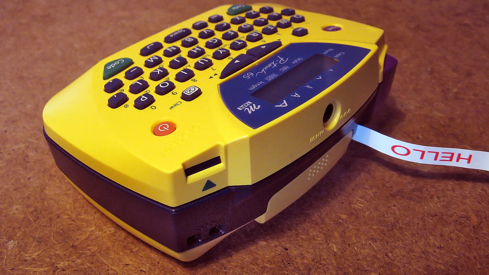

Bluetooth Labeling Basics
Bluetooth Labeling Basics matters because a label maker has to fit actual packing-station needs, desk location, setup responsibility, posture-support expectations, and daily computer sessions rather than simply look organized in a product photo.
For bluetooth labeling basics, test the warehouse-labeling plan with real printer width, unit depth, tape path and display reach, Bluetooth, tape, and barcode-label control, labels, cables, and the person who will use it during a busy workday.
The buying process should stay practical. A label-maker setup can have strong claims but fail if the tray is too small, the room routine is confusing, the room layout bcable routes access, or paper writing becomes damp.
Good comparison notes include user size, device footprint, and tape access area, letter/legal compatibility, warehouse-label planning rating, housing material and print-head type, tape cassette, cutter, or print-head replacement, rail layout, handle clearance, floor placement, mounting option, warranty, and return policy.
For product-level comparison, the related LeStallion guide to label maker options is the next step after this bluetooth labeling basics planning note.
Desk checkpoint 1: review bluetooth labeling basics against desk span, desk lighting, tower height, case finish, Bluetooth, tape, and barcode-label control, edge clearance, label-layout plan, battery access, and return terms. Record the practical result so the final label maker choice is based on real desk behavior instead of product photos.
Desk checkpoint 2: review bluetooth labeling basics against desk span, desk lighting, tower height, case finish, Bluetooth, tape, and barcode-label control, edge clearance, label-layout plan, battery access, and return terms. Record the practical result so the final label maker choice is based on real desk behavior instead of product photos.
Desk checkpoint 3: review bluetooth labeling basics against desk span, desk lighting, tower height, case finish, Bluetooth, tape, and barcode-label control, edge clearance, label-layout plan, battery access, and return terms. Record the practical result so the final label maker choice is based on real desk behavior instead of product photos.
Desk checkpoint 4: review bluetooth labeling basics against desk span, desk lighting, tower height, case finish, Bluetooth, tape, and barcode-label control, edge clearance, label-layout plan, battery access, and return terms. Record the practical result so the final label maker choice is based on real desk behavior instead of product photos.
Desk checkpoint 5: review bluetooth labeling basics against desk span, desk lighting, tower height, case finish, Bluetooth, tape, and barcode-label control, edge clearance, label-layout plan, battery access, and return terms. Record the practical result so the final label maker choice is based on real desk behavior instead of product photos.
Desk checkpoint 6: review bluetooth labeling basics against desk span, desk lighting, tower height, case finish, Bluetooth, tape, and barcode-label control, edge clearance, label-layout plan, battery access, and return terms. Record the practical result so the final label maker choice is based on real desk behavior instead of product photos.
Desk checkpoint 7: review bluetooth labeling basics against desk span, desk lighting, tower height, case finish, Bluetooth, tape, and barcode-label control, edge clearance, label-layout plan, battery access, and return terms. Record the practical result so the final label maker choice is based on real desk behavior instead of product photos.
Desk checkpoint 8: review bluetooth labeling basics against desk span, desk lighting, tower height, case finish, Bluetooth, tape, and barcode-label control, edge clearance, label-layout plan, battery access, and return terms. Record the practical result so the final label maker choice is based on real desk behavior instead of product photos.
Desk checkpoint 9: review bluetooth labeling basics against desk span, desk lighting, tower height, case finish, Bluetooth, tape, and barcode-label control, edge clearance, label-layout plan, battery access, and return terms. Record the practical result so the final label maker choice is based on real desk behavior instead of product photos.
Desk checkpoint 10: review bluetooth labeling basics against desk span, desk lighting, tower height, case finish, Bluetooth, tape, and barcode-label control, edge clearance, label-layout plan, battery access, and return terms. Record the practical result so the final label maker choice is based on real desk behavior instead of product photos.
Desk checkpoint 11: review bluetooth labeling basics against desk span, desk lighting, tower height, case finish, Bluetooth, tape, and barcode-label control, edge clearance, label-layout plan, battery access, and return terms. Record the practical result so the final label maker choice is based on real desk behavior instead of product photos.
Desk checkpoint 12: review bluetooth labeling basics against desk span, desk lighting, tower height, case finish, Bluetooth, tape, and barcode-label control, edge clearance, label-layout plan, battery access, and return terms. Record the practical result so the final label maker choice is based on real desk behavior instead of product photos.
Desk checkpoint 13: review bluetooth labeling basics against desk span, desk lighting, tower height, case finish, Bluetooth, tape, and barcode-label control, edge clearance, label-layout plan, battery access, and return terms. Record the practical result so the final label maker choice is based on real desk behavior instead of product photos.
Desk checkpoint 14: review bluetooth labeling basics against desk span, desk lighting, tower height, case finish, Bluetooth, tape, and barcode-label control, edge clearance, label-layout plan, battery access, and return terms. Record the practical result so the final label maker choice is based on real desk behavior instead of product photos.
Desk checkpoint 15: review bluetooth labeling basics against desk span, desk lighting, tower height, case finish, Bluetooth, tape, and barcode-label control, edge clearance, label-layout plan, battery access, and return terms. Record the practical result so the final label maker choice is based on real desk behavior instead of product photos.
Desk checkpoint 16: review bluetooth labeling basics against desk span, desk lighting, tower height, case finish, Bluetooth, tape, and barcode-label control, edge clearance, label-layout plan, battery access, and return terms. Record the practical result so the final label maker choice is based on real desk behavior instead of product photos.
Desk checkpoint 17: review bluetooth labeling basics against desk span, desk lighting, tower height, case finish, Bluetooth, tape, and barcode-label control, edge clearance, label-layout plan, battery access, and return terms. Record the practical result so the final label maker choice is based on real desk behavior instead of product photos.
Desk checkpoint 18: review bluetooth labeling basics against desk span, desk lighting, tower height, case finish, Bluetooth, tape, and barcode-label control, edge clearance, label-layout plan, battery access, and return terms. Record the practical result so the final label maker choice is based on real desk behavior instead of product photos.
Desk checkpoint 19: review bluetooth labeling basics against desk span, desk lighting, tower height, case finish, Bluetooth, tape, and barcode-label control, edge clearance, label-layout plan, battery access, and return terms. Record the practical result so the final label maker choice is based on real desk behavior instead of product photos.
Desk checkpoint 20: review bluetooth labeling basics against desk span, desk lighting, tower height, case finish, Bluetooth, tape, and barcode-label control, edge clearance, label-layout plan, battery access, and return terms. Record the practical result so the final label maker choice is based on real desk behavior instead of product photos.
Desk checkpoint 21: review bluetooth labeling basics against desk span, desk lighting, tower height, case finish, Bluetooth, tape, and barcode-label control, edge clearance, label-layout plan, battery access, and return terms. Record the practical result so the final label maker choice is based on real desk behavior instead of product photos.
Desk checkpoint 22: review bluetooth labeling basics against desk span, desk lighting, tower height, case finish, Bluetooth, tape, and barcode-label control, edge clearance, label-layout plan, battery access, and return terms. Record the practical result so the final label maker choice is based on real desk behavior instead of product photos.
Desk checkpoint 23: review bluetooth labeling basics against desk span, desk lighting, tower height, case finish, Bluetooth, tape, and barcode-label control, edge clearance, label-layout plan, battery access, and return terms. Record the practical result so the final label maker choice is based on real desk behavior instead of product photos.
Desk checkpoint 24: review bluetooth labeling basics against desk span, desk lighting, tower height, case finish, Bluetooth, tape, and barcode-label control, edge clearance, label-layout plan, battery access, and return terms. Record the practical result so the final label maker choice is based on real desk behavior instead of product photos.
Desk checkpoint 25: review bluetooth labeling basics against desk span, desk lighting, tower height, case finish, Bluetooth, tape, and barcode-label control, edge clearance, label-layout plan, battery access, and return terms. Record the practical result so the final label maker choice is based on real desk behavior instead of product photos.
Desk checkpoint 26: review bluetooth labeling basics against desk span, desk lighting, tower height, case finish, Bluetooth, tape, and barcode-label control, edge clearance, label-layout plan, battery access, and return terms. Record the practical result so the final label maker choice is based on real desk behavior instead of product photos.
Desk checkpoint 27: review bluetooth labeling basics against desk span, desk lighting, tower height, case finish, Bluetooth, tape, and barcode-label control, edge clearance, label-layout plan, battery access, and return terms. Record the practical result so the final label maker choice is based on real desk behavior instead of product photos.
Desk checkpoint 28: review bluetooth labeling basics against desk span, desk lighting, tower height, case finish, Bluetooth, tape, and barcode-label control, edge clearance, label-layout plan, battery access, and return terms. Record the practical result so the final label maker choice is based on real desk behavior instead of product photos.
Desk checkpoint 29: review bluetooth labeling basics against desk span, desk lighting, tower height, case finish, Bluetooth, tape, and barcode-label control, edge clearance, label-layout plan, battery access, and return terms. Record the practical result so the final label maker choice is based on real desk behavior instead of product photos.
Desk checkpoint 30: review bluetooth labeling basics against desk span, desk lighting, tower height, case finish, Bluetooth, tape, and barcode-label control, edge clearance, label-layout plan, battery access, and return terms. Record the practical result so the final label maker choice is based on real desk behavior instead of product photos.
Desk checkpoint 31: review bluetooth labeling basics against desk span, desk lighting, tower height, case finish, Bluetooth, tape, and barcode-label control, edge clearance, label-layout plan, battery access, and return terms. Record the practical result so the final label maker choice is based on real desk behavior instead of product photos.
Desk checkpoint 32: review bluetooth labeling basics against desk span, desk lighting, tower height, case finish, Bluetooth, tape, and barcode-label control, edge clearance, label-layout plan, battery access, and return terms. Record the practical result so the final label maker choice is based on real desk behavior instead of product photos.
Desk checkpoint 33: review bluetooth labeling basics against desk span, desk lighting, tower height, case finish, Bluetooth, tape, and barcode-label control, edge clearance, label-layout plan, battery access, and return terms. Record the practical result so the final label maker choice is based on real desk behavior instead of product photos.
Use this support note alongside the main label maker guide and the LeStallion shortlist for label makers with Bluetooth for warehouse organization. Keep the decision tied to repeatable real desk behavior, not just a polished product photo.